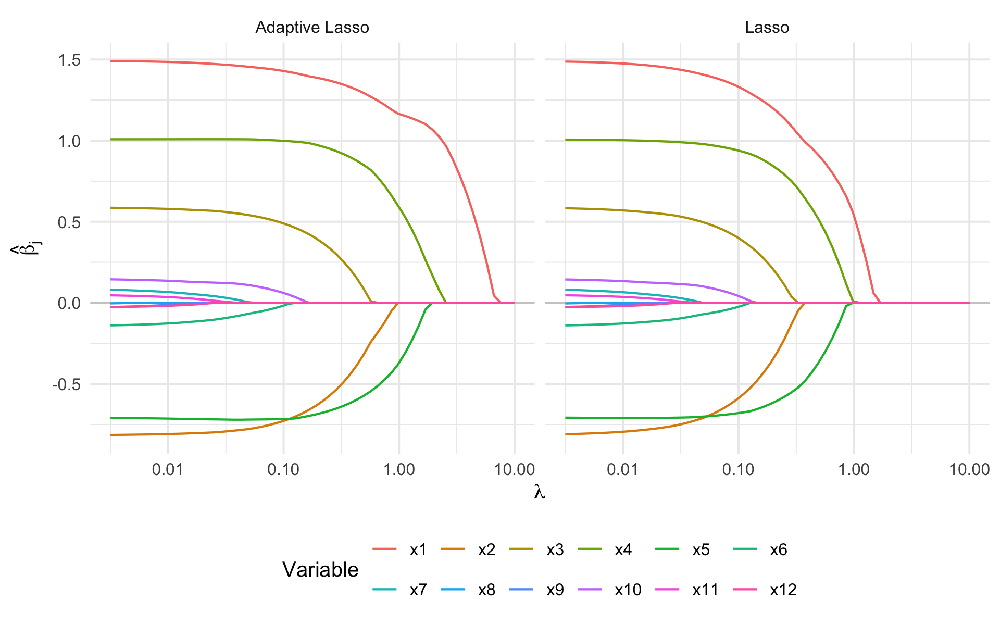
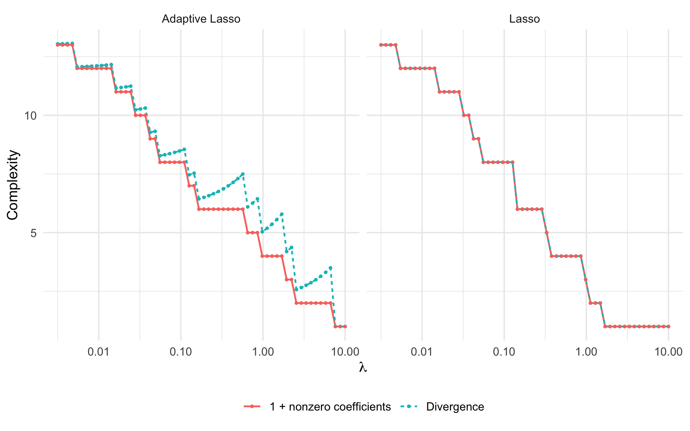
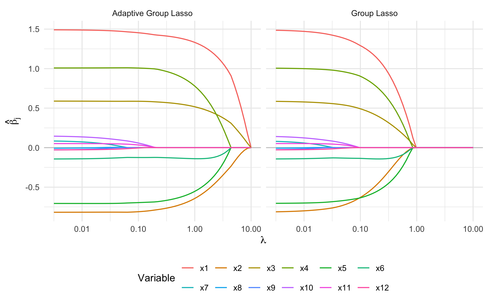
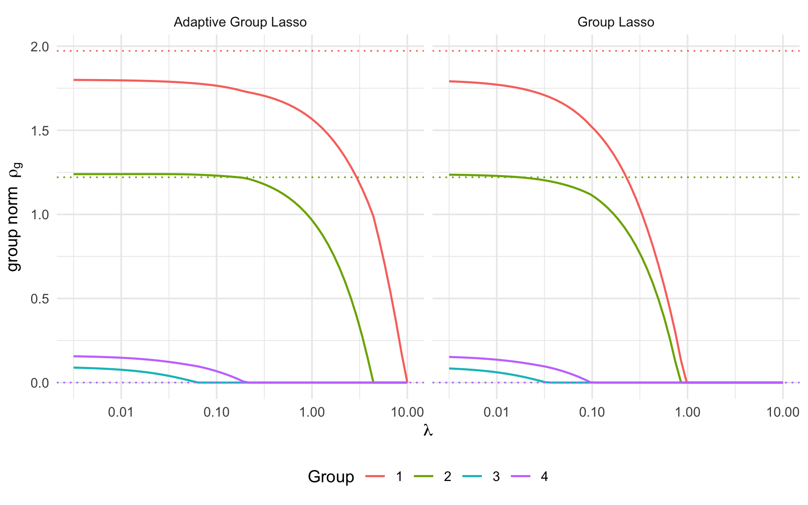
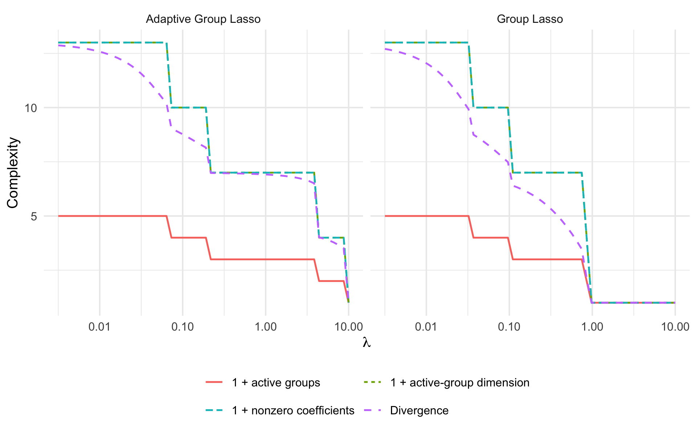
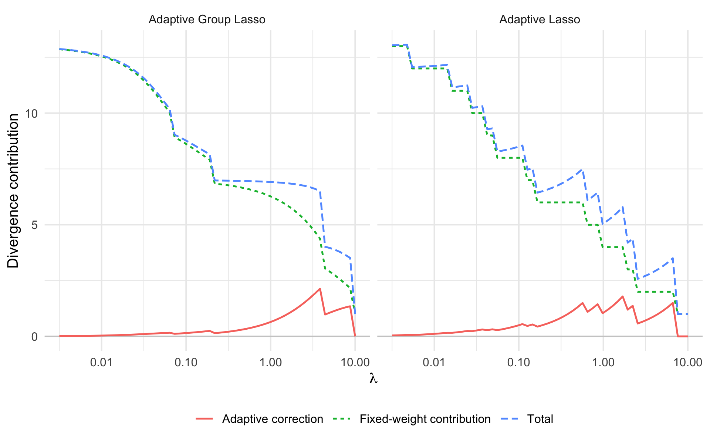
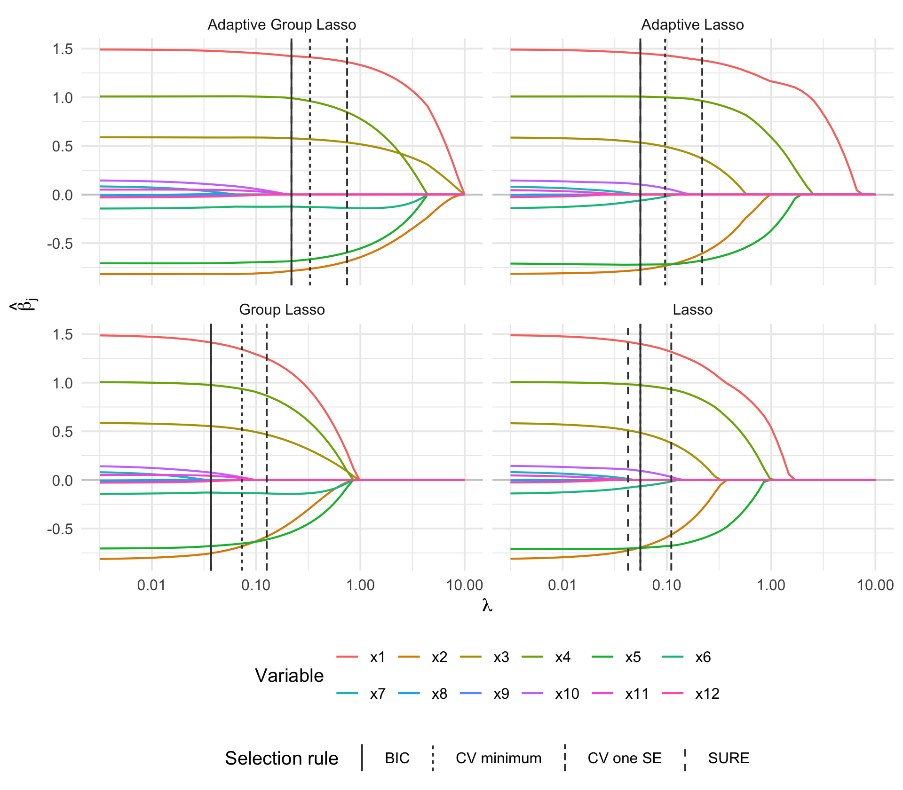
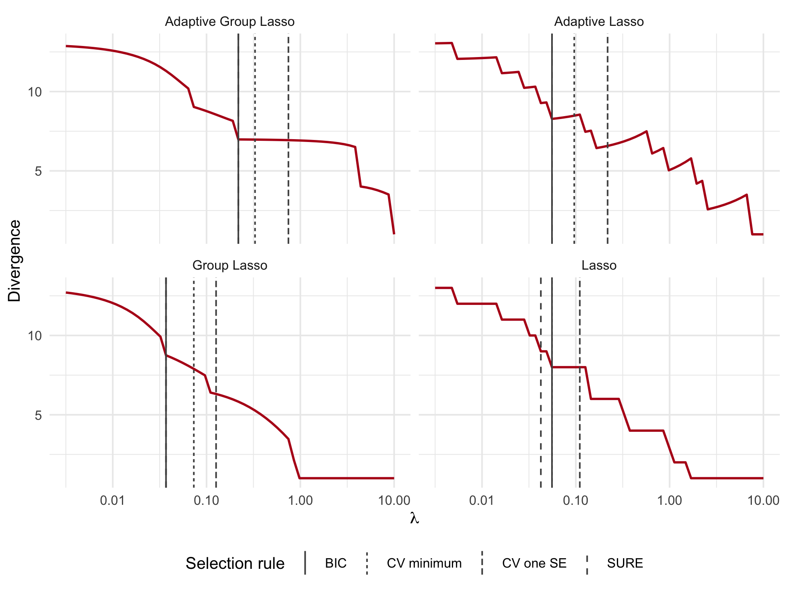

library(spares)
library(ggplot2)
theme_set(theme_minimal(base_size = 12))Estimates and degrees of freedom along the path
1 What changes along a regularization path?
This tutorial follows the Lasso (R. Tibshirani 1996), Adaptive Lasso (Zou 2006), Group Lasso (Yuan and Lin 2006) and Adaptive Group Lasso (Wang and Leng 2008). General background on regularization paths and model selection is given by Hastie, Tibshirani, and Wainwright (2015).
Increasing the penalty changes the estimated coefficients, the selected variables and the sensitivity of the fit to the data. These are related, but different, quantities. This tutorial follows all three on a common grid, first for Lasso and Adaptive Lasso, then for Group Lasso and Adaptive Group Lasso.
We use simulated data so that the true coefficients and the conditional mean are known. The aim is to understand the methods and their outputs, not to establish a performance ranking from one realization. We will:
- construct a reproducible regression problem;
- inspect coefficient paths and selected slices of those paths;
- compare divergence with counts of selected coordinates and groups;
- separate the fixed-weight contribution from the adaptive correction;
- relate tuning choices to independent test performance;
- check one analytic divergence against numerical differentiation.
1.1 Packages and graphical conventions
All path plots use a logarithmic horizontal axis labelled \(\lambda\). Moving right means a stronger penalty. Lines join computed grid points; they do not imply continuity at changes of the active set. Estimates returned by coef(fit, s=...) between knots use interpolation rather than an exact refit.
The objective uses \(\mathrm{RSS}/(2n)\), so the parameter \(\gamma\) in a formulation using \(\mathrm{RSS}/2\) is \(\gamma=n\lambda\). A common numerical \(\lambda\) does not represent identical regularization across different penalties or weights.
2 Generate data with a known structure
There are twelve correlated predictors in four disjoint groups of size three. Only the first two groups contain signal; the second contains both nonzero and zero coefficients. This illustrates the distinction between selecting a group and selecting every coordinate individually.
set.seed(2026)
n <- 100
p <- 12
groups <- rep(1:4, each = 3)
Sigma <- outer(seq_len(p), seq_len(p), function(i, j) 0.35^abs(i-j))
X <- matrix(rnorm(n*p), n, p) %*% chol(Sigma)
colnames(X) <- paste0('x', seq_len(p))
beta_true <- c(1.5, -1, 0.8, 1, -0.7, 0, rep(0, 6))
intercept_true <- 1
sigma <- 0.8
mu <- as.numeric(intercept_true + X %*% beta_true)
y <- mu + rnorm(n, sd = sigma)
knitr::kable(data.frame(variable=colnames(X), group=groups,
coefficient=beta_true), digits=2)| variable | group | coefficient |
|---|---|---|
| x1 | 1 | 1.5 |
| x2 | 1 | -1.0 |
| x3 | 1 | 0.8 |
| x4 | 2 | 1.0 |
| x5 | 2 | -0.7 |
| x6 | 2 | 0.0 |
| x7 | 3 | 0.0 |
| x8 | 3 | 0.0 |
| x9 | 3 | 0.0 |
| x10 | 4 | 0.0 |
| x11 | 4 | 0.0 |
| x12 | 4 | 0.0 |
Predictors have the same population variance. We do not standardize them in this example: the design matrix is held fixed throughout fitting and the numerical derivative check. An unpenalized intercept is included in every fit. The OLS pilot is identifiable because the full design has full column rank and \(n>p+1\).
2.1 A common positive grid
lambda <- 10^seq(1, -2.5, length.out = 60)
control <- list(maxit=20000, abstol=1e-10, reltol=1e-10, print.out=FALSE)This geometric grid spans strong to weak regularization. It is specified before looking at the response and reused for all methods. The upper end should produce an intercept-only fit; we check this rather than assuming it. For routine analyses, automatic grids and lambdamax() are also available.
3 Lasso and Adaptive Lasso
The Lasso uses fixed coordinate weights. Adaptive Lasso uses the full-design OLS pilot with exponential weights \(\omega_j(r)=e^{-r}\). Large pilot magnitudes receive smaller penalties. This finite profile also avoids a singular weight at a zero pilot; inverse-power weights are covered in the workflow vignette.
fit_lasso <- lmreg(X, y, penalty='lasso', intercept=TRUE,
standardize=FALSE, lambda=lambda, control=control)
fit_adalasso <- lmreg(X, y, penalty='adalasso', profile='exponential',
exponent=1, intercept=TRUE, standardize=FALSE,
lambda=lambda, control=control)
fits <- list('Lasso'=fit_lasso, 'Adaptive Lasso'=fit_adalasso)3.1 Extract estimates and check diagnostics
beta has one row per penalized variable and one column per regularization value. a0 stores the intercept path; coef() includes it in coefficient extraction. dof() returns one row per regularization value, including the status of the derivative calculation.
path_data <- function(fit, method) {
data.frame(method=method, lambda=rep(fit$lambda, each=nrow(fit$beta)),
variable=factor(rep(colnames(X), times=length(fit$lambda)), levels=colnames(X)),
estimate=as.vector(fit$beta),
group=factor(rep(groups, times=length(fit$lambda))))
}
coefficient_plot <- function(fits) {
dat <- do.call(rbind, Map(path_data, fits, names(fits)))
ggplot(dat, aes(lambda, estimate, colour=variable, group=variable)) +
geom_hline(yintercept=0, colour='grey80') + geom_line(linewidth=0.6) +
scale_x_log10() + facet_wrap(~method, ncol=2) +
labs(x=expression(lambda), y=expression(hat(beta)[j]), colour='Variable') +
theme(legend.position='bottom', legend.box='vertical') +
guides(colour=guide_legend(nrow=2, byrow=TRUE, order=1))
}
get_diagnostics <- function(fits) {
do.call(rbind, lapply(names(fits), function(m) {
d <- dof(fits[[m]])
data.frame(method=m, lambda=d$lambda, df=d$df,
status=d$status, nzero=fits[[m]]$nzero)
}))
}
diagnostics <- get_diagnostics(fits)
knitr::kable(as.data.frame(table(diagnostics$method, diagnostics$status)),
col.names=c('Method','Derivative status','Grid points'))| Method | Derivative status | Grid points |
|---|---|---|
| Adaptive Lasso | ok | 60 |
| Lasso | ok | 60 |
stopifnot(all(diagnostics$status == 'ok'))
knitr::kable(data.frame(method=names(fits),
nonzero_at_largest_lambda=vapply(fits, function(f) f$nzero[which.max(f$lambda)], numeric(1))), row.names=FALSE)| method | nonzero_at_largest_lambda |
|---|---|
| Lasso | 0 |
| Adaptive Lasso | 0 |
The checks below deliberately stop if a candidate fails the derivative diagnostics. In an analysis, inspect the reported status before adjusting solver tolerances or excluding a candidate; do not silently replace missing DoF by the active-set size.
3.2 Coefficient paths
coefficient_plot(fits)
At the right-hand end, the penalized coefficients are zero. Moving left relaxes the penalty and allows signal variables, and eventually noise variables, into the model. Compare how quickly the large signal coefficients approach their true values under adaptive weighting. Their values at specific knots are shown next, so that the comparison is not based on visual impressions alone.
coefficient_slices <- function(fits, indices=c(1, 25, 45, 60)) {
do.call(rbind, lapply(names(fits), function(m) {
f <- fits[[m]]
b <- coef(f, s=f$lambda[indices])
z <- data.frame(variable=rownames(b), truth=c(intercept_true, beta_true), b,
check.names=FALSE)
names(z)[-(1:2)] <- paste0('lambda=', format(signif(f$lambda[indices],3), trim=TRUE))
cbind(method=m, z)
}))
}
knitr::kable(coefficient_slices(fits), digits=3, row.names=FALSE)| method | variable | truth | lambda=10.00000 | lambda=0.37700 | lambda=0.02450 | lambda=0.00316 |
|---|---|---|---|---|---|---|
| Lasso | (Intercept) | 1.0 | 0.718 | 0.892 | 1.001 | 1.018 |
| Lasso | x1 | 1.5 | 0.000 | 0.992 | 1.449 | 1.487 |
| Lasso | x2 | -1.0 | 0.000 | 0.000 | -0.764 | -0.810 |
| Lasso | x3 | 0.8 | 0.000 | 0.000 | 0.544 | 0.583 |
| Lasso | x4 | 1.0 | 0.000 | 0.644 | 0.994 | 1.006 |
| Lasso | x5 | -0.7 | 0.000 | -0.481 | -0.709 | -0.708 |
| Lasso | x6 | 0.0 | 0.000 | 0.000 | -0.106 | -0.139 |
| Lasso | x7 | 0.0 | 0.000 | 0.000 | 0.039 | 0.081 |
| Lasso | x8 | 0.0 | 0.000 | 0.000 | 0.000 | -0.004 |
| Lasso | x9 | 0.0 | 0.000 | 0.000 | 0.000 | -0.025 |
| Lasso | x10 | 0.0 | 0.000 | 0.000 | 0.120 | 0.144 |
| Lasso | x11 | 0.0 | 0.000 | 0.000 | 0.016 | 0.046 |
| Lasso | x12 | 0.0 | 0.000 | 0.000 | -0.004 | -0.026 |
| Adaptive Lasso | (Intercept) | 1.0 | 0.718 | 0.959 | 1.005 | 1.019 |
| Adaptive Lasso | x1 | 1.5 | 0.000 | 1.330 | 1.473 | 1.490 |
| Adaptive Lasso | x2 | -1.0 | 0.000 | -0.440 | -0.799 | -0.815 |
| Adaptive Lasso | x3 | 0.8 | 0.000 | 0.206 | 0.567 | 0.586 |
| Adaptive Lasso | x4 | 1.0 | 0.000 | 0.898 | 1.009 | 1.008 |
| Adaptive Lasso | x5 | -0.7 | 0.000 | -0.617 | -0.718 | -0.709 |
| Adaptive Lasso | x6 | 0.0 | 0.000 | 0.000 | -0.105 | -0.139 |
| Adaptive Lasso | x7 | 0.0 | 0.000 | 0.000 | 0.042 | 0.081 |
| Adaptive Lasso | x8 | 0.0 | 0.000 | 0.000 | 0.000 | -0.003 |
| Adaptive Lasso | x9 | 0.0 | 0.000 | 0.000 | 0.000 | -0.026 |
| Adaptive Lasso | x10 | 0.0 | 0.000 | 0.000 | 0.125 | 0.145 |
| Adaptive Lasso | x11 | 0.0 | 0.000 | 0.000 | 0.014 | 0.046 |
| Adaptive Lasso | x12 | 0.0 | 0.000 | 0.000 | -0.001 | -0.026 |
3.3 Degrees of freedom along the same paths
With an intercept and a full-column-rank design, the fixed-weight Lasso reference is \(1+|A|\): the intercept contributes one degree of freedom. For Adaptive Lasso the total also includes derivatives of the pilot-based weights. We compare each method with its own active set.
plot_dof <- function(d) {
z <- rbind(data.frame(d, quantity='Divergence', value=d$df),
data.frame(d, quantity='1 + nonzero coefficients', value=1+d$nzero))
ggplot(z, aes(lambda, value, colour=quantity, linetype=quantity)) +
geom_line(linewidth=0.7) + geom_point(size=0.7) + scale_x_log10() +
facet_wrap(~method, ncol=2) +
labs(x=expression(lambda), y='Complexity', colour=NULL, linetype=NULL) +
theme(legend.position='bottom')
}
plot_dof(diagnostics)
knitr::kable(do.call(rbind, lapply(split(diagnostics, diagnostics$method), function(d) {
data.frame(method=d$method[1], min_correction=min(d$df-1-d$nzero),
max_correction=max(d$df-1-d$nzero))
})), digits=4, row.names=FALSE)| method | min_correction | max_correction |
|---|---|---|
| Adaptive Lasso | 0 | 1.7885 |
| Lasso | 0 | 0.0000 |
The table quantifies departure from the counting rule on this realization. For the correlated design used here, we do not assume that the adaptive correction must be positive at every response or every regularization value. The curve is a response-specific divergence path, not the population DoF function itself.
4 Group Lasso and Adaptive Group Lasso
We now use the known disjoint groups. The data, intercept and regularization grid stay the same. Group Lasso promotes entire groups entering or leaving the model; it does not generally create sparsity within an active group.
fit_glasso <- lmreg(X, y, penalty='glasso', groups=groups,
intercept=TRUE, standardize=FALSE,
lambda=lambda, control=control)
fit_adaglasso <- lmreg(X, y, penalty='adaglasso', groups=groups,
profile='exponential', exponent=1,
intercept=TRUE, standardize=FALSE,
lambda=lambda, control=control)
group_fits <- list('Group Lasso'=fit_glasso, 'Adaptive Group Lasso'=fit_adaglasso)
group_diagnostics <- get_diagnostics(group_fits)
stopifnot(all(group_diagnostics$status == 'ok'))
knitr::kable(as.data.frame(table(group_diagnostics$method, group_diagnostics$status)),
col.names=c('Method','Derivative status','Grid points'))| Method | Derivative status | Grid points |
|---|---|---|
| Adaptive Group Lasso | ok | 60 |
| Group Lasso | ok | 60 |
4.1 Coordinate estimates and group norms
coefficient_plot(group_fits)
group_path <- function(fit, method) {
do.call(rbind, lapply(unique(groups), function(g) {
data.frame(method=method, lambda=fit$lambda, group=factor(g),
norm=sqrt(colSums(fit$beta[groups==g,,drop=FALSE]^2)),
truth=sqrt(sum(beta_true[groups==g]^2)))
}))
}
gp <- do.call(rbind, Map(group_path, group_fits, names(group_fits)))
truths <- unique(gp[c('method','group','truth')])
ggplot(gp, aes(lambda, norm, colour=group)) + geom_line(linewidth=0.7) +
geom_hline(data=truths, aes(yintercept=truth, colour=group), linetype=3) +
scale_x_log10() + facet_wrap(~method, ncol=2) +
labs(x=expression(lambda), y=expression(group~norm~~rho[g]), colour='Group') +
theme(legend.position='bottom')
The true norm is zero for groups 3 and 4. Their fitted norms show when weak regularization admits groups containing only noise. Group 2 contains a truly zero coordinate, but its group is informative: selecting this group does not imply that all three of its coefficients are truly nonzero.
knitr::kable(coefficient_slices(group_fits), digits=3, row.names=FALSE)| method | variable | truth | lambda=10.00000 | lambda=0.37700 | lambda=0.02450 | lambda=0.00316 |
|---|---|---|---|---|---|---|
| Group Lasso | (Intercept) | 1.0 | 0.718 | 0.873 | 0.999 | 1.018 |
| Group Lasso | x1 | 1.5 | 0.000 | 0.841 | 1.439 | 1.486 |
| Group Lasso | x2 | -1.0 | 0.000 | -0.238 | -0.775 | -0.812 |
| Group Lasso | x3 | 0.8 | 0.000 | 0.276 | 0.564 | 0.586 |
| Group Lasso | x4 | 1.0 | 0.000 | 0.528 | 0.987 | 1.005 |
| Group Lasso | x5 | -0.7 | 0.000 | -0.400 | -0.691 | -0.704 |
| Group Lasso | x6 | 0.0 | 0.000 | -0.130 | -0.132 | -0.143 |
| Group Lasso | x7 | 0.0 | 0.000 | 0.000 | 0.019 | 0.080 |
| Group Lasso | x8 | 0.0 | 0.000 | 0.000 | 0.002 | -0.007 |
| Group Lasso | x9 | 0.0 | 0.000 | 0.000 | -0.001 | -0.026 |
| Group Lasso | x10 | 0.0 | 0.000 | 0.000 | 0.094 | 0.141 |
| Group Lasso | x11 | 0.0 | 0.000 | 0.000 | 0.048 | 0.052 |
| Group Lasso | x12 | 0.0 | 0.000 | 0.000 | -0.019 | -0.028 |
| Adaptive Group Lasso | (Intercept) | 1.0 | 0.718 | 0.977 | 1.012 | 1.020 |
| Adaptive Group Lasso | x1 | 1.5 | 0.000 | 1.405 | 1.483 | 1.491 |
| Adaptive Group Lasso | x2 | -1.0 | 0.000 | -0.754 | -0.816 | -0.818 |
| Adaptive Group Lasso | x3 | 0.8 | 0.000 | 0.565 | 0.587 | 0.589 |
| Adaptive Group Lasso | x4 | 1.0 | 0.000 | 0.947 | 1.010 | 1.008 |
| Adaptive Group Lasso | x5 | -0.7 | 0.000 | -0.657 | -0.706 | -0.706 |
| Adaptive Group Lasso | x6 | 0.0 | 0.000 | -0.129 | -0.135 | -0.143 |
| Adaptive Group Lasso | x7 | 0.0 | 0.000 | 0.000 | 0.050 | 0.084 |
| Adaptive Group Lasso | x8 | 0.0 | 0.000 | 0.000 | 0.002 | -0.008 |
| Adaptive Group Lasso | x9 | 0.0 | 0.000 | 0.000 | -0.011 | -0.028 |
| Adaptive Group Lasso | x10 | 0.0 | 0.000 | 0.000 | 0.118 | 0.145 |
| Adaptive Group Lasso | x11 | 0.0 | 0.000 | 0.000 | 0.050 | 0.051 |
| Adaptive Group Lasso | x12 | 0.0 | 0.000 | 0.000 | -0.023 | -0.028 |
4.2 Group counts, dimensions and divergence
group_counts <- do.call(rbind, lapply(names(group_fits), function(m) {
f <- group_fits[[m]]; d <- dof(f)
active <- attr(d, 'active_groups')
ng <- d$active_groups
dimension <- vapply(active, function(a) sum(table(groups)[a]), numeric(1))
rbind(data.frame(method=m,lambda=f$lambda,quantity='Divergence',value=d$df),
data.frame(method=m,lambda=f$lambda,quantity='1 + nonzero coefficients',value=1+f$nzero),
data.frame(method=m,lambda=f$lambda,quantity='1 + active groups',value=1+ng),
data.frame(method=m,lambda=f$lambda,quantity='1 + active-group dimension',value=1+dimension))
}))
ggplot(group_counts, aes(lambda,value,colour=quantity,linetype=quantity)) +
geom_line(linewidth=0.7) + scale_x_log10() + facet_wrap(~method,ncol=2) +
labs(x=expression(lambda), y='Complexity', colour=NULL,linetype=NULL) +
theme(legend.position='bottom') +
guides(colour=guide_legend(nrow=2,byrow=TRUE),
linetype=guide_legend(nrow=2,byrow=TRUE))
Counts use the active groups returned by dof(), whose diagnostics distinguish constrained-zero groups from small numerical residuals. Testing raw fitted coefficients for exact equality to zero can give misleading counts.
For fixed positive group weights, the penalized divergence lies between the number of active groups and their total dimension; the plotted totals add the intercept. The active-group dimension counts all coordinates in active groups, including any individually zero coefficients. The two coordinate-count curves may overlap in this example. Adaptive weight derivatives introduce another term, so the fixed-weight bounds should not be transferred unchanged to the adaptive total.
4.3 Decompose the adaptive divergence
all_fits <- c(fits, group_fits)
adaptive_fits <- all_fits[c('Adaptive Lasso','Adaptive Group Lasso')]
components <- do.call(rbind, lapply(names(adaptive_fits), function(m) {
d <- dof(adaptive_fits[[m]])
rbind(data.frame(method=m,lambda=d$lambda,component='Total',value=d$df),
data.frame(method=m,lambda=d$lambda,component='Fixed-weight contribution',value=d$df_fixed),
data.frame(method=m,lambda=d$lambda,component='Adaptive correction',value=d$adaptive_correction))
}))
ggplot(components,aes(lambda,value,colour=component,linetype=component)) +
geom_hline(yintercept=0,colour='grey80') + geom_line(linewidth=0.7) +
scale_x_log10() + facet_wrap(~method,ncol=2) +
labs(x=expression(lambda),y='Divergence contribution',colour=NULL,linetype=NULL) +
theme(legend.position='bottom')
The fixed-weight contribution is computed at the same adaptive solution, with the observed weights held constant only during differentiation. It is not the DoF of the separately fitted ordinary Lasso or Group Lasso. The correction excludes the intercept contribution, which is already included in the fixed-weight term.
5 Select a location on each path
For each method, we compute effective-DoF BIC, known-variance SURE, and five-fold CV with a common fold assignment and an explicit common grid. The adaptive pilot is recomputed in every training fold. Using the true variance in SURE is possible here because this is a simulation.
set.seed(2027)
foldid <- sample(rep(1:5, length.out=n))
penalties <- c('lasso','adalasso','glasso','adaglasso')
selected <- do.call(rbind, lapply(seq_along(all_fits), function(i) {
m <- names(all_fits)[i]; f <- all_fits[[i]]
bic <- select(f, criterion='BIC')
sure <- select(f, criterion='SURE', sigma2=sigma^2)
args <- list(X=X,y=y,penalty=penalties[i],intercept=TRUE,
standardize=FALSE,lambda=lambda,foldid=foldid,control=control)
if(i>=3) args$groups <- groups
if(i %in% c(2,4)) {args$profile <- 'exponential'; args$exponent <- 1}
cv <- do.call(cv.lmreg,args)
data.frame(method=m,rule=c('BIC','SURE','CV minimum','CV one SE'),
lambda=c(bic$lambda,sure$lambda,cv$lambda.min,cv$lambda.1se))
}))
knitr::kable(selected,digits=5,row.names=FALSE)| method | rule | lambda |
|---|---|---|
| Lasso | BIC | 0.05569 |
| Lasso | SURE | 0.04238 |
| Lasso | CV minimum | 0.05569 |
| Lasso | CV one SE | 0.11025 |
| Adaptive Lasso | BIC | 0.05569 |
| Adaptive Lasso | SURE | 0.05569 |
| Adaptive Lasso | CV minimum | 0.09617 |
| Adaptive Lasso | CV one SE | 0.21826 |
| Group Lasso | BIC | 0.03697 |
| Group Lasso | SURE | 0.03697 |
| Group Lasso | CV minimum | 0.07318 |
| Group Lasso | CV one SE | 0.12638 |
| Adaptive Group Lasso | BIC | 0.21826 |
| Adaptive Group Lasso | SURE | 0.21826 |
| Adaptive Group Lasso | CV minimum | 0.32881 |
| Adaptive Group Lasso | CV one SE | 0.74624 |
5.1 Locate the selected models on both paths
coefficient_plot(all_fits) +
geom_vline(data=selected,aes(xintercept=lambda,linetype=rule),
colour='grey25',linewidth=0.55) +
labs(linetype='Selection rule') +
guides(linetype=guide_legend(nrow=1,order=2)) +
theme(legend.box='vertical')
dall <- get_diagnostics(all_fits)
ggplot(dall,aes(lambda,df)) + geom_line(colour='#b5121b',linewidth=0.8) +
geom_vline(data=selected,aes(xintercept=lambda,linetype=rule),colour='grey30') +
scale_x_log10() + facet_wrap(~method,ncol=2) +
labs(x=expression(lambda),y='Divergence',linetype='Selection rule') +
theme(legend.position='bottom')
BIC, SURE and CV target different criteria and need not select the same knot. The one-SE choice favours a larger penalty than the CV minimum according to the reported fold-dispersion rule. It is not an exact uncertainty statement accounting for overlapping training sets. The fixed-\(\lambda\) unbiasedness result does not automatically apply to the full data-dependent selection rule.
5.2 Evaluate on independent test observations
set.seed(2028)
ntest <- 2000
Xtest <- matrix(rnorm(ntest*p),ntest,p) %*% chol(Sigma)
mutest <- as.numeric(intercept_true + Xtest %*% beta_true)
ytest <- mutest + rnorm(ntest,sd=sigma)
performance <- do.call(rbind,lapply(seq_len(nrow(selected)),function(i) {
s <- selected[i,]; f <- all_fits[[s$method]]
pred <- as.numeric(predict(f,newx=Xtest,s=s$lambda))
k <- which.min(abs(f$lambda-s$lambda))
data.frame(s,nonzero=f$nzero[k],df=dof(f)$df[k],
mean_MSE=mean((pred-mutest)^2),prediction_MSE=mean((pred-ytest)^2))
}))
knitr::kable(performance,digits=4,row.names=FALSE)| method | rule | lambda | nonzero | df | mean_MSE | prediction_MSE |
|---|---|---|---|---|---|---|
| Lasso | BIC | 0.0557 | 7 | 8.0000 | 0.1399 | 0.8040 |
| Lasso | SURE | 0.0424 | 8 | 9.0000 | 0.1215 | 0.7847 |
| Lasso | CV minimum | 0.0557 | 7 | 8.0000 | 0.1399 | 0.8040 |
| Lasso | CV one SE | 0.1102 | 7 | 8.0000 | 0.2564 | 0.9240 |
| Adaptive Lasso | BIC | 0.0557 | 7 | 8.2776 | 0.0927 | 0.7552 |
| Adaptive Lasso | SURE | 0.0557 | 7 | 8.2776 | 0.0927 | 0.7552 |
| Adaptive Lasso | CV minimum | 0.0962 | 7 | 8.4795 | 0.1115 | 0.7754 |
| Adaptive Lasso | CV one SE | 0.2183 | 5 | 6.5749 | 0.2251 | 0.8924 |
| Group Lasso | BIC | 0.0370 | 9 | 8.7499 | 0.1043 | 0.7671 |
| Group Lasso | SURE | 0.0370 | 9 | 8.7499 | 0.1043 | 0.7671 |
| Group Lasso | CV minimum | 0.0732 | 9 | 7.8941 | 0.1475 | 0.8140 |
| Group Lasso | CV one SE | 0.1264 | 6 | 6.3123 | 0.2521 | 0.9229 |
| Adaptive Group Lasso | BIC | 0.2183 | 6 | 6.9820 | 0.0755 | 0.7417 |
| Adaptive Group Lasso | SURE | 0.2183 | 6 | 6.9820 | 0.0755 | 0.7417 |
| Adaptive Group Lasso | CV minimum | 0.3288 | 6 | 6.9728 | 0.0892 | 0.7558 |
| Adaptive Group Lasso | CV one SE | 0.7462 | 6 | 6.9372 | 0.1631 | 0.8314 |
mean_MSE compares predictions with the known noiseless mean; prediction_MSE compares with new noisy responses and includes irreducible noise. SURE here targets in-sample fixed-design mean estimation risk, so it need not minimize this independent random-design test error. The test set is used only after selection and never determines the chosen regularization value.
- Lasso: the selected penalties range from 0.0424 to 0.1102, with 7 to 8 nonzero coefficients. Independent test mean MSE ranges from 0.1215 to 0.2564.
- Adaptive Lasso: the selected penalties range from 0.0557 to 0.2183, with 5 to 7 nonzero coefficients. Independent test mean MSE ranges from 0.0927 to 0.2251.
- Group Lasso: the selected penalties range from 0.0370 to 0.1264, with 6 to 9 nonzero coefficients. Independent test mean MSE ranges from 0.1043 to 0.2521.
- Adaptive Group Lasso: the selected penalties range from 0.2183 to 0.7462, with 6 to 6 nonzero coefficients. Independent test mean MSE ranges from 0.0755 to 0.1631.
These summaries describe this dataset, not a universal advantage of one method or criterion. Repeated simulations would be needed to assess stability.
6 Check the analytic divergence numerically
Stein’s expectation identity requires regularity and integrability (Stein 1981). Relevant degrees-of-freedom results include those for the Lasso (Zou, Hastie, and Tibshirani 2007) and partly smooth regularizers (Vaiter et al. 2017). The finite-difference calculation below checks a local Jacobian formula; it does not prove those global hypotheses.
For one fixed Adaptive Group Lasso knot, approximate \(\sum_i\partial\widehat\mu_i/\partial y_i\) by centered response perturbations. We refit the adaptive model for every perturbation, including recomputation of its pilot and weights. Holding the weights fixed would check a different Jacobian. The design, regularization value and preprocessing are held fixed.
f <- fit_adaglasso
k <- which.min(abs(f$lambda-0.1))
lambda_check <- f$lambda[k]
refit_mean <- function(response) {
fit <- lmreg(X,response,penalty='adaglasso',groups=groups,
profile='exponential',exponent=1,intercept=TRUE,
standardize=FALSE,lambda=lambda_check,control=control)
stopifnot(all(as.numeric(fit$convergence)==1))
as.numeric(predict(fit,newx=X))
}
finite_difference <- function(h) {
sum(vapply(seq_len(n),function(i) {
yp <- ym <- y; yp[i] <- yp[i]+h; ym[i] <- ym[i]-h
(refit_mean(yp)[i]-refit_mean(ym)[i])/(2*h)
},numeric(1)))
}
h <- c(1e-3,3e-4)
analytic <- dof(f)$df[k]
fd <- vapply(h,finite_difference,numeric(1))
validation <- data.frame(lambda=lambda_check,step=h,analytic=analytic,
numerical=fd,absolute_error=abs(fd-analytic))
validation_display <- validation
validation_display$absolute_error <- formatC(validation$absolute_error, format='e', digits=2)
knitr::kable(validation_display,digits=7,row.names=FALSE)| lambda | step | analytic | numerical | absolute_error |
|---|---|---|---|---|
| 0.0961725 | 1e-03 | 8.802832 | 8.802832 | 4.21e-08 |
| 0.0961725 | 3e-04 | 8.802832 | 8.802832 | 3.84e-08 |
stopifnot(all(validation$absolute_error < 0.01))Agreement at two step sizes is a local numerical check. Finite differences can be unreliable at transitions or if solver error dominates the perturbation. This calculation does not prove weak differentiability or integrability and therefore does not by itself establish Stein unbiasedness.
7 Reproduce and extend the analysis
For prediction-error estimation and the distinction between fitting and model search, see Efron (2004) and R. J. Tibshirani (2015).
Every figure and table above is generated by the displayed R code. Change the seed, correlation, signal strengths or group structure to explore other cases. For method comparisons, keep the same training/test data and CV folds; do not select a favourable seed after seeing the results.
For overlapping and sparse-group penalties, the fitting interface is similar, but the penalty geometry and the scope of the DoF guarantees must be discussed separately. This tutorial concentrates on the four methods for which the fixed-weight/adaptive comparison is most direct.
sessionInfo()
#> R version 4.5.2 (2025-10-31)
#> Platform: aarch64-apple-darwin20
#> Running under: macOS Sonoma 14.3
#>
#> Matrix products: default
#> BLAS: /System/Library/Frameworks/Accelerate.framework/Versions/A/Frameworks/vecLib.framework/Versions/A/libBLAS.dylib
#> LAPACK: /Library/Frameworks/R.framework/Versions/4.5-arm64/Resources/lib/libRlapack.dylib; LAPACK version 3.12.1
#>
#> locale:
#> [1] C
#>
#> time zone: Europe/Rome
#> tzcode source: internal
#>
#> attached base packages:
#> [1] stats graphics grDevices utils datasets methods base
#>
#> other attached packages:
#> [1] ggplot2_4.0.3 spares_1.0.0
#>
#> loaded via a namespace (and not attached):
#> [1] Matrix_1.7-4 gtable_0.3.6 jsonlite_2.0.0 dplyr_1.2.0
#> [5] compiler_4.5.2 highs_1.12.0-3 tidyselect_1.2.1 Rcpp_1.1.1
#> [9] parallel_4.5.2 scales_1.4.0 yaml_2.3.12 fastmap_1.2.0
#> [13] clarabel_0.11.2 lattice_0.22-9 R6_2.6.1 labeling_0.4.3
#> [17] generics_0.1.4 knitr_1.51 iterators_1.0.14 rbibutils_2.4.1
#> [21] htmlwidgets_1.6.4 backports_1.5.0 tibble_3.3.1 checkmate_2.3.4
#> [25] osqp_1.0.0 pillar_1.11.1 RColorBrewer_1.1-3 rlang_1.2.0
#> [29] CVXR_1.8.1 xfun_0.56 S7_0.2.2 otel_0.2.0
#> [33] doParallel_1.0.17 cli_3.6.6 withr_3.0.2 magrittr_2.0.4
#> [37] Rdpack_2.6.6 digest_0.6.39 foreach_1.5.2 grid_4.5.2
#> [41] gmp_0.7-5.1 lifecycle_1.0.5 vctrs_0.7.3 scs_3.2.7
#> [45] evaluate_1.0.5 pracma_2.4.6 glue_1.8.1 farver_2.1.2
#> [49] codetools_0.2-20 rmarkdown_2.30 pkgconfig_2.0.3 tools_4.5.2
#> [53] htmltools_0.5.9Download the complete executable tutorial
Download the bibliography and keep it alongside the R Markdown source when rendering the tutorial separately.
References
Efron, Bradley. 2004. “The Estimation of Prediction Error: Covariance Penalties and Cross-Validation.” Journal of the American Statistical Association 99 (467): 619–32. https://doi.org/10.1198/016214504000000692.
Hastie, Trevor, Robert Tibshirani, and Martin Wainwright. 2015. Statistical Learning with Sparsity: The Lasso and Generalizations. Monographs on Statistics and Applied Probability 143. Boca Raton: CRC Press, Taylor & Francis Group.
Stein, Charles M. 1981. “Estimation of the Mean of a Multivariate Normal Distribution.” The Annals of Statistics 9 (6): 1135–51.
Tibshirani, Robert. 1996. “Regression Shrinkage and Selection via the Lasso.” Journal of the Royal Statistical Society. Series B (Methodological) 58 (1): 267–88.
Tibshirani, Ryan J. 2015. “Degrees of Freedom and Model Search.” Statistica Sinica 25 (3): 1265–96.
Vaiter, Samuel, Charles Deledalle, Jalal Fadili, Gabriel Peyré, and Charles Dossal. 2017. “The Degrees of Freedom of Partly Smooth Regularizers.” Annals of the Institute of Statistical Mathematics 69 (4): 791–832.
Wang, Hansheng, and Chenlei Leng. 2008. “A Note on Adaptive Group Lasso.” Computational Statistics & Data Analysis 52 (12): 5277–86.
Yuan, Ming, and Yi Lin. 2006. “Model Selection and Estimation in Regression with Grouped Variables.” Journal of the Royal Statistical Society: Series B (Statistical Methodology) 68 (1): 49–67.
Zou, Hui. 2006. “The Adaptive Lasso and Its Oracle Properties.” J. Amer. Statist. Assoc. 101 (476): 1418–29. https://doi.org/10.1198/016214506000000735.
Zou, Hui, Trevor Hastie, and Robert Tibshirani. 2007. “On the “Degrees of Freedom" of the Lasso.” The Annals of Statistics 35 (5): 2173–92.